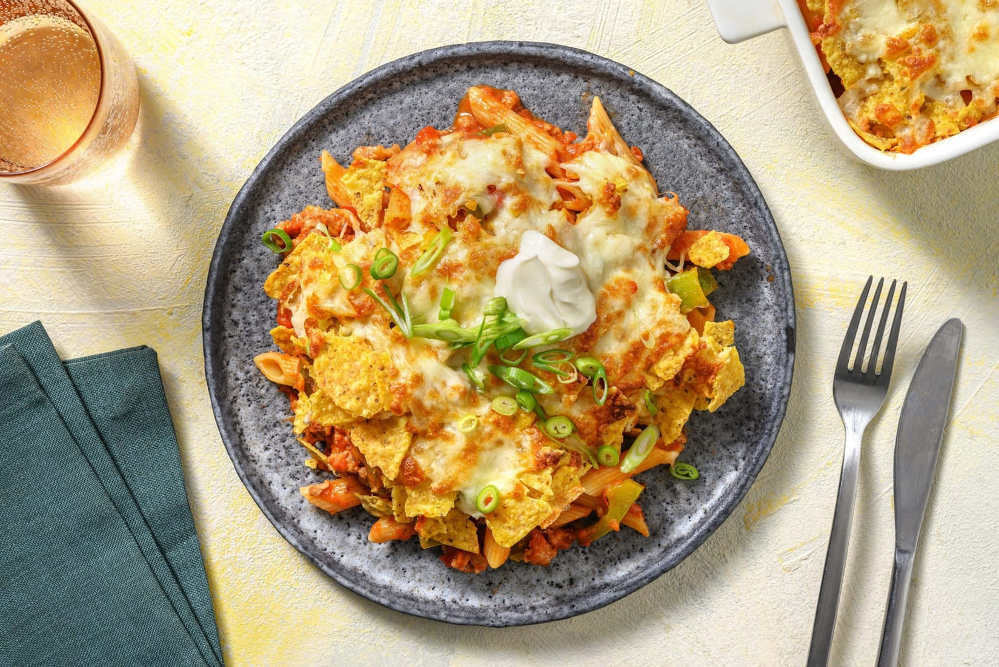

Tex-Mex Turkey Penne

Description
This delicious, no-fuss pasta dish will satisfy even the pickiest eater! We've packed it with Tex-Mex spices, a cheesy, tangy
sour cream sauce and crunchy tortilla chips – and snuck in a few veggies, for good measure.
Ingredients
- 250 g ground turkey
- 2 tbsp enchilada spice blend
- 370 mL crushed tomatoes
- 85 g tortilla chips
- 1 unit green onion
- 170 g penne
- ½ cup tomato salsa
- 200 g green bell pepper
- 3 tbsp sour cream
- ½ cup monterey jack cheese, shredded
- 1 tbsp oil
- ¼ tsp Salt
- 0.13 tsp pepper
- ½ tsp sugar
Steps
- Before starting, preheat the broiler to high. Add 10 cups water and 2 tsp salt to a large pot (use same for 4 ppl).
Cover and bring to a boil over high heat. Wash and dry all produce. Add penne to the boiling water. Cook uncovered,
stirring occasionally, until tender, 10-12 min. Reserve 1/4 cup pasta water (dbl for 4 ppl), then drain and return
penne to the same pot, off heat.
- While penne cooks, heat a large non-stick pan over medium-high heat. While the pan heats, core, then cut pepper into
1/2-inch pieces. When hot, add 1 tbsp oil (dbl for 4 ppl), then turkey. Cook, breaking up turkey into smaller pieces,
until no pink remains, 4-5 min.** Add peppers, then sprinkle with Enchilada Spice Blend. Season with salt and pepper.
Cook, stirring often, until fragrant, 30 sec.
- Add crushed tomatoes, salsa and 1/2 tsp sugar (dbl for 4 ppl) to the pan with turkey and peppers. Season with salt
and pepper, then stir to combine. Bring to a simmer over high. Once simmering, reduce heat to medium. Cook, stirring
occasionally, until peppers are tender-crisp, 4-5 min.
- While sauce cooks, thinly slice green onion. Open one side of the package of tortilla chips. Gently crush tortilla
chips in their package until broken into smaller pieces.
- Add half the cheese, turkey, sauce and reserved pasta water to the pot with penne. Heat the pot over medium. Stir
until cheese melts and sauce thickens slightly, 2-3 min. Season with salt and pepper, to taste. Transfer penne mixture
to an 8x8-inch baking dish (9x13-inch for 4 ppl). Sprinkle with crushed tortilla chips and remaining cheese. Broil
in the middle of the oven until cheese melts, 2-3 min. (TIP: Keep an eye on chips so they don't burn!)
- Divide penne between plates. Dollop with sour cream. Sprinkle green onions over top.
Back
Recipe taken from Hello Fresh